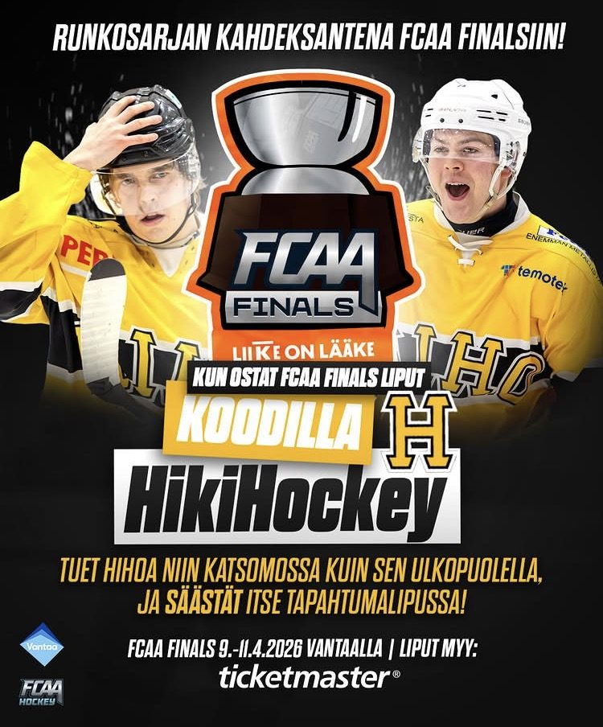

Otetaanpa tähän väliin sisällysluettelo kuin olut PM-kisoissa.
Selasin läpi HiHon instapostaukset viime kaudelta, ja ne kertovat tarinan paremmin kuin mikään sarjataulukko. Katsotaanpa siis, missä mennään tänä päivänä – ennen kuin käännän putken taaksepäin.
Vuonna 2026 Hiki-Hockey on yhä valtio valtion sisällä – tai ainakin oma lohkonsa II-divisioonassa. Kaudella 2025–2026 Seura marssi pelkän ‘perusduunin’ voimin jo kolmatta kevättä putkeen Rautaliigan finaaleihin. Kolmatta kertaa peräkkäin joukkue raivasi tiensä kakun luo – ja kolmatta kertaa se kirsikka kakun päältä jäi vielä saavuttamatta. Finaalien otteluvoitot KooVee2:ta vastaan kirjattiin lukemin 0–3.
Kaksi ensimmäistä ottelua olivat todella tiukkoja – kahdessa pelissä apinat tekivät yhteensä yhden maalin (hianoo!!!1!1!!1!) – mutta perjantaina Haka2:ssa ei enää riittänyt, ja lopulta paremmalle hävittiin. Tappio ei kuitenkaan himmennä sitä tosiasiaa, että HiHon urheilullinen kehitys on ollut 2020-luvulla suorastaan huimaa, ja tämäkin kausi toimi jälleen todisteena. Jatketaan hommia, niin kyllä se divarimestaruus sieltä vielä joskus tulee.
Kaukalossa nähtiin kaudella tuttuun tapaan koko eläintarha. Maalintekovastuuta kantoivat muun muassa Rasmus “Kaljat jää kopalle” Rasinaho, Valtteri “Kalja hattuhyllyllä” Peltonen sekä uusin talousvahvistus, financial reinforcement -apina Fätti. Syöttöpuolella loisti Joel “Gretzky” Pelttari ja viimeisen tikin neuloi tyhjiin Leevi “melkein lääkäri” Telenius – mies, joka ehti kauden aikana myös juhlia 100:tta ottelua Seurassa. Maalilla Torni piti nurkkansa 93,7 %:n torjuntaprosentilla ja vältti nollapelin jinxauksen jälleen kerran.
“Kaljat jää kopalle” kuulostaa piikiltä, mutta minä kuulen siitä jotain muuta: pelaaja, joka tunnetaan niin hyvin, että hänestä osataan vitsailla lämpimästi. Sellaisia lempinimiä ei anneta kenelle tahansa – ne täytyy ansaita olemalla osa porukkaa vuosikausia.
Seuran äänitorvena toimii Instagramin @hikihockey, jossa jokaisen ottelun jälkeen jaellaan tuttuun tapaan gorillat ja lampaat – ja pohjustetaan pelit sopivasti Ennio Morriconen The Ecstasy of Goldin ja Baltimoran Tarzan Boyn tahdissa. Postaukset ilmestyvät sekä suomeksi että ‘In English’, jotta myös maailman muut Sweatboys-fanit pysyvät kärryillä.
Tällä kaudella Seura sai käyttöönsä myös uuden Kopan. Tila on käsittämättömän tärkeä joukkueen yhteishengelle, ja vaikka uusi Koppa onkin totuttua pienempi, on jokaisen apinan takamus sieltä paikkansa löytänyt. Sponsorit – TEK ‘me tekniikan takana’ ja Tampereen yliopisto etunenässä – pitivät toiminnan pyörät pyörimässä, ja toimitsijapöydässä hoiti hommansa jälleen kerran korvaamaton Petri. Kiitos Petri!
Kausi ei suinkaan päättynyt divarifinaaleihin. FCAA-sarjassa HiHo jatkoi menoaan pudotuspeleihin: JAMK Tigers kaadettiin puolivälierissä 3–0, ja matka jatkui HC Lumikoita vastaan Tikkurilan Kuljetusrinki Areenalla. Lisäksi kalenterissa siinsi PM-turnaus Linköpingissä – aivan kuten Hiho-kansa on PM-kisojen perässä matkannut jo vuosikymmeniä.

Lopuksi vielä koko juhlakauden gorillat ja lampaat (tai no, juhlakausi se on 2026–2027:kin), tapoihin kuuluen:
Lampaat-listan jälkeen on Hihossa tapana antaa tilaa myös Sini Viivalle. Hänen ainoa tehtävänsä on pitää huolen siitä, ettei kukaan – ei pelaaja, ei lukija, ei edes tilastorivi – jää paitsioon.
Odottakaahan hetki. Ennen kuin käännämme sivua, haluan sanoa yhden asian ääneen: jokainen tämän kauden lampaista on silti osa joukkuetta, ei vastustajaa. Yksi maali on enemmän kuin nolla maalia, sen diplomi-insinöörikin tietää. Uuden Kopan neliöt, historian huonoimmat ruukiet, budjetti – nämä eivät ole syytöksiä, ne ovat vain asioita, jotka ensi kausi korjaa yhdessä. Ketään ei jätetä paitsioon täällä, ei edes tilastoja.
— Sini Viiva
Matka kohti kirsikkaa jatkuu. Nyt kun nykyhetki on käyty läpi, käännän putken toiseen suuntaan: finaalikevään 2026 jälkeen on aika palata siihen, mistä kaikki alkoi. Seuraavat sivut kulkevat taaksepäin, vuosi kerrallaan.
📸 Seuraa Hihoa Instagramissa